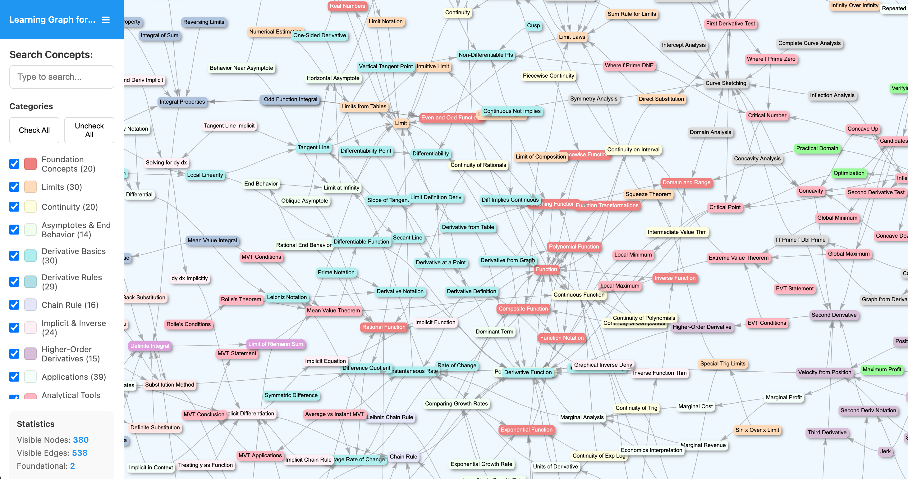
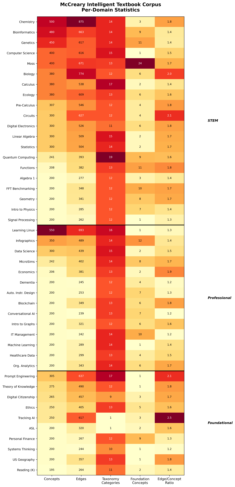
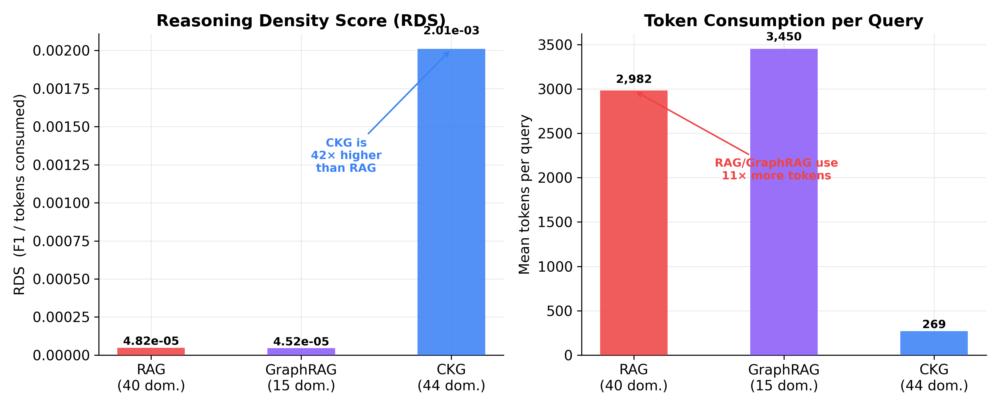
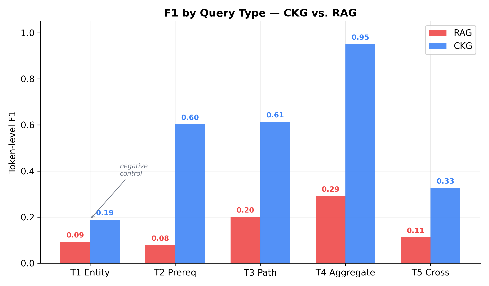
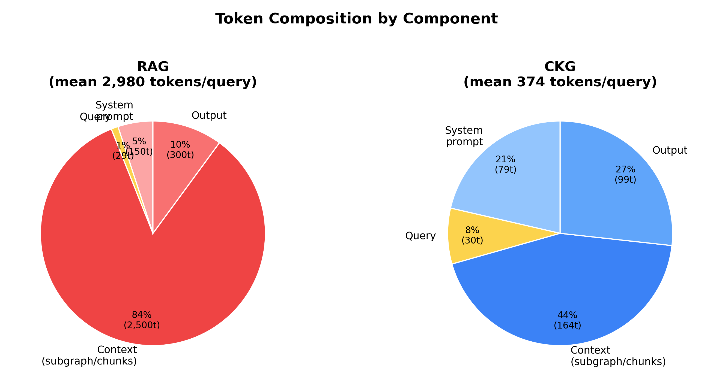
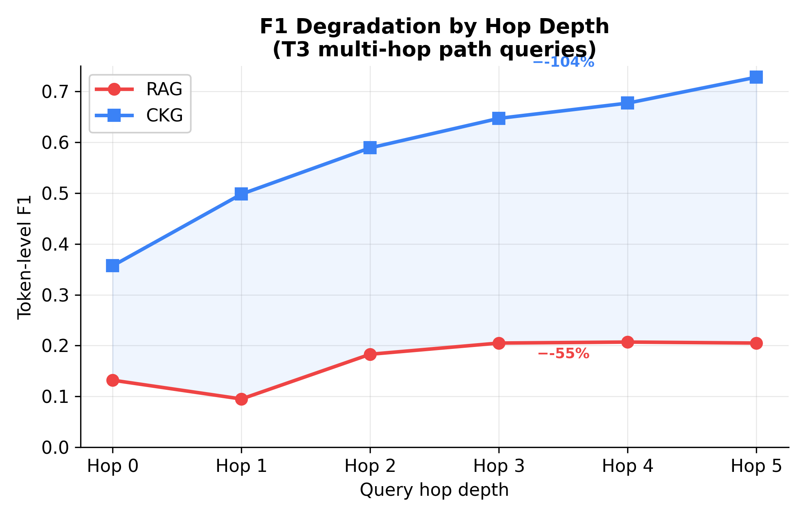
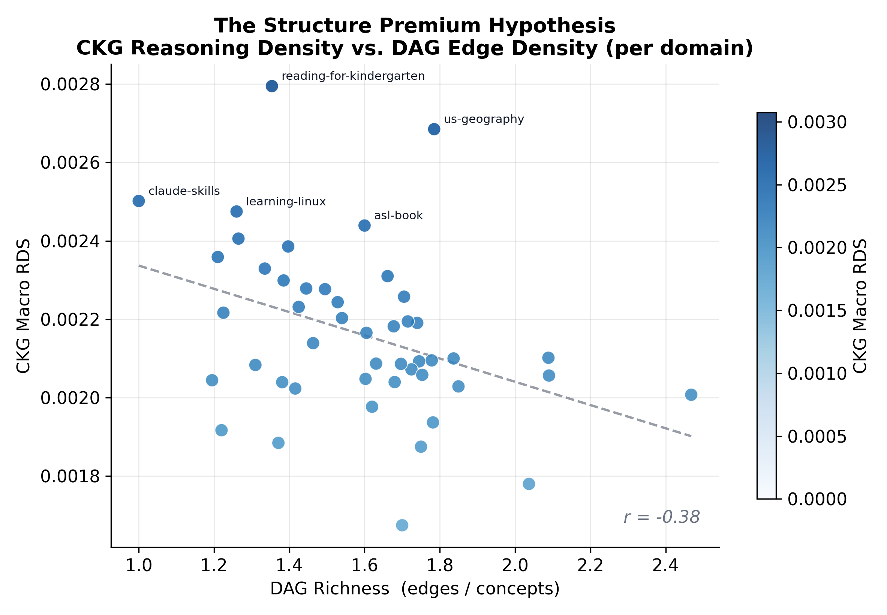

Benchmarking Knowledge Retrieval Architectures Across Educational and Commercial Domains: RAG, GraphRAG, and Compact Knowledge Graphs
daniel.yarmoluk@gmail.com
Version 0.5.0 — Draft for Review — April 2026
Abstract
Retrieval-augmented generation (RAG) and graph-based retrieval (GraphRAG) are the dominant paradigms for grounding LLM responses in structured knowledge. Both optimize for recall while treating token cost as a secondary concern. We introduce Compact Knowledge Graphs (CKG) — pre-structured DAG representations with explicit concept taxonomy and pipe-delimited dependency encoding — and present a two-track benchmark comparing CKG, RAG, and GraphRAG across educational and commercial domains.
Track 1 evaluates the McCreary Intelligent Textbook Corpus: 44 hand-curated educational domains spanning STEM, professional, and foundational subjects (7,758 queries). CKG achieves macro-average F₁ of 0.4709 versus 0.1231 for RAG and 0.1200 for GraphRAG, at 11× fewer tokens per query (269 vs. 2,982 vs. 3,450). CKG F₁ increases with hop depth (peaking at hop=3: 0.64) while RAG degrades. The compound Reasoning Density Score (RDS) advantage is 42×. T1 entity lookup (CKG 0.207, RAG 0.094) serves as a designed negative control.
Track 2 tests whether the architecture generalizes beyond hand-curated educational data. We build a complete GLP-1/Obesity pharmacology CKG programmatically from the ClinicalTrials.gov API with no expert annotation (170 queries). The pipeline-generated CKG reaches macro F₁ 0.5298 — exceeding the Track 1 hand-curated average by 12.5% and preserving a 28× RDS advantage over RAG. Automated construction does not degrade retrieval quality; it matches or improves it. Together the two tracks establish CKG as a distinct architecture whose structural advantage is domain-agnostic and does not depend on manual curation.
Benchmark, dataset, and evaluation harness are released at github.com/Yarmoluk/ckg-benchmark under CC BY 4.0 / MIT.
1. Introduction
1.1 Motivation
LLM retrieval quality is typically measured by F₁ alone, yet token cost is a first-class production constraint — not a research afterthought. Domain-specific knowledge has latent structure that RAG discards through chunking, and GraphRAG re-derives structure from text at significant computational expense. But what if the structure is already known?
Consider a deployed AI tutoring system serving 10,000 student sessions per day, each requiring 5–10 knowledge retrieval queries. At RAG's typical 3,000–5,000 input tokens per query, daily token consumption exceeds 150M–500M tokens. At Claude Sonnet 4.6 pricing ($3 per 1M input tokens), this yields daily inference costs of $450–$1,500 for retrieval alone. A system that achieves equivalent accuracy at 250–400 tokens per query reduces that cost by a factor of 10–15× — the difference between a viable product and an unsustainable one.
This cost gap is not merely a tuning opportunity; it reflects a structural difference in how knowledge is represented. RAG stores knowledge as prose and retrieves it by embedding similarity, recovering structure only indirectly. GraphRAG re-derives structure from text via LLM entity extraction — at significant additional cost. Compact Knowledge Graphs (CKG) use structure that was authored directly, requiring no derivation step and enabling exact retrieval in tens of tokens instead of thousands.
1.2 The Three Paradigms
The figure below illustrates the three retrieval pipelines. Table 1 summarizes their key differences.
GraphRAG: Text → Entity Extraction → Graph → Community Search → LLM
CKG: CSV → DAG Lookup → Subgraph → LLM
| System | Knowledge Repr. | Retrieval | Build Cost |
|---|---|---|---|
| RAG | Unstructured text chunks | Embedding similarity | Embed all chunks |
| GraphRAG | Dynamically extracted graph | Graph + community search | Full entity extraction |
| CKG | Pre-structured DAG + taxonomy | Direct concept/edge lookup | Zero (CSV-native)* |
* Build cost assumes pre-existing expert DAG. Expert curation cost is not measured; see Discussion: Limitations.
1.3 Falsifiable Claims
We make the following falsifiable claims, each testable against the benchmark results presented in Results:
- CKG achieves higher F₁ on T2 (dependency) and T3 (multi-hop path) queries.
- CKG F₁ does not degrade with hop depth; RAG F₁ degrades significantly.
- CKG RDS ratio ≥ 10× vs RAG across all 46 domains.
- GraphRAG hallucinates edges not present in ground truth DAG (HR > 0).
- CKG Hallucination Rate = 0 (by construction).
- The "Structure Premium" hypothesis: RDS advantage correlates with DAG richness (r > 0.7).
- Cross-domain transfer: The CKG structural advantage observed on hand-curated educational domains (Track 1) transfers to a commercial pharmacology domain (Track 2) with F₁ equal to or greater than the Track 1 average.
- Construction invariance: The CKG F₁ advantage does not depend on expert manual curation; a DAG built programmatically from a public API yields comparable or superior retrieval performance.
We explicitly do not claim CKG outperforms RAG on T1 (entity lookup / explanatory) queries, which require prose content absent from the DAG structure. T1 results serve as a negative control validating that the benchmark is not constructed to favor CKG across all query types.
1.4 Contributions
This paper makes the following contributions:
- The CKG architecture specification (format, DAG constraints, taxonomy schema) and an accompanying BFS/DFS subgraph-extraction retrieval method.
- Five novel evaluation metrics (RDS, CUR, Hop-F₁, CPCA, RP).
- The McCreary Corpus as the first formal benchmark dataset for structural knowledge retrieval.
- An open benchmark: 45 domains (44 educational + 1 commercial) × three systems, ~23,900 evaluated query–system pairs.
- Track 2 multi-domain ensemble: the educational McCreary corpus evaluated alongside a commercial life-sciences (GLP-1/Obesity) domain in a single harness, demonstrating educational-to-commercial transfer of the CKG retrieval advantage.
- Automated CKG construction pipeline: a four-stage pipeline (API extraction → concept and edge extraction →
learning-graph.csv→ benchmark queries) that produces a CKG domain from ClinicalTrials.gov with no manual annotation, and achieves macro F₁ equal to or greater than the Track 1 hand-curated average. - A HuggingFace dataset with one-command reproduction harness.
2. Related Work
2.1 Retrieval-Augmented Generation
Lewis et al. [Lewis 2020] introduced RAG as a method for grounding language model outputs in retrieved passages, establishing the retrieve-then-read paradigm. Concurrent work on REALM [Guu 2020] demonstrated that retrieval augmentation could be integrated into pre-training. Dense Passage Retrieval (DPR) [Karpukhin 2020] established embedding-based retrieval as the dominant approach, and Fusion-in-Decoder [Izacard 2021] showed that conditioning generation on multiple retrieved passages improves multi-hop performance.
More recent work has explored self-reflective retrieval [Asai 2023], which trains models to decide when to retrieve and to critique retrieved content. Gao et al. [Gao 2024] survey the current landscape, cataloguing trade-offs between retrieval granularity, index size, and generation quality.
A consistent theme across RAG work is that token budget is treated as an engineering constraint rather than an evaluation axis. The BEIR benchmark [Thakur 2021] evaluates zero-shot retrieval across 18 heterogeneous IR tasks, and RAGAS [Es 2023] measures faithfulness and relevance of RAG pipelines — but neither measures per-query token consumption. This gap motivates our Reasoning Density Score (see Metrics).
2.2 Multi-Hop Question Answering
The SQuAD benchmark [Rajpurkar 2016] established token-level F₁ as the standard for extractive QA, which we adopt for its well-understood properties. HotpotQA [Yang 2018] introduced multi-hop reasoning as a distinct challenge: answering a question requires traversing multiple supporting facts. MuSiQue [Trivedi 2022] further isolated compositional multi-hop reasoning from shortcut exploitation.
These benchmarks evaluate whether a system can find multi-hop answers in unstructured text. Our T3 query type tests the related but distinct problem of traversing a structured dependency graph — a task where the ground truth is the explicit path, not an extracted span. RAG must infer graph paths from prose; CKG traverses them directly.
2.3 Graph-Based Retrieval
Edge et al. [Edge 2024] introduced GraphRAG, which applies community detection over LLM-extracted entity graphs to answer both local (entity-level) and global (corpus-level) queries. LightRAG [Guo 2024] reduces GraphRAG's computational footprint with a dual-level retrieval strategy. HippoRAG [Gutierrez 2024] draws on hippocampal memory models to build associative knowledge networks from text.
Graph retrieval applied specifically to structured domain representations is explored in G-Retriever [He 2024], which encodes text-attributed graphs for QA, and Think-on-Graph [Sun 2024], which performs beam search over knowledge graphs to reason step-by-step. Peng et al. [Peng 2024] survey the rapidly growing Graph-RAG literature.
A key distinction for this benchmark: GraphRAG, LightRAG, and HippoRAG all perform dynamic extraction — they derive graph structure from unstructured text at index time. CKG uses pre-structured domain knowledge in which the graph was authored by a domain expert. When expert structure is available, the dynamic extraction step is wasted computation; our benchmark quantifies this waste.
2.4 Knowledge Graphs for LLMs
Pan et al. [Pan 2024] provide a comprehensive roadmap for unifying LLMs and knowledge graphs, identifying four paradigms: KG-enhanced LLMs, LLM-augmented KGs, synergized systems, and KG-only inference. Structured KG embeddings such as TransE [Bordes 2013] established the representation-learning approach to relational data, while KGQA work [Saxena 2020] demonstrated that KG embeddings can support complex multi-hop question answering.
More recent approaches [Luo 2024] use LLMs to reason over KG triples interactively, traversing the graph via prompted chain-of-thought. Zhu et al. [Zhu 2023] survey how LLMs are being used as IR systems. CKG differs from these approaches in representation: rather than full ontologies or relational triples, it uses lightweight 4-column DAGs trading expressiveness for construction simplicity and token efficiency.
2.5 Evaluation Gaps in IR
Standard IR metrics (F₁, MRR, NDCG) do not account for token cost. RAGAS [Es 2023] measures faithfulness and relevance but not efficiency. Token cost has begun receiving attention as LLM inference scales: retrieval systems that return large, redundant contexts inflate cost without improving accuracy. This paper introduces Reasoning Density Score (RDS = F₁ / tokens) and validates it on a 44-domain corpus — the first metric to jointly optimize quality and token consumption at multi-domain scale.
2.6 Educational Knowledge Graphs
McCreary [McCreary 2024] introduced the Intelligent Textbooks methodology, which uses a task-specific data structure we call a learning graph to drive chapter planning, concept sequencing, and content generation. This paper is the first to formalize this structure as a citable multi-domain benchmark. Because the learning graph serves a purpose distinct from that of a general-purpose knowledge graph, and because the distinction is load-bearing for interpreting our results, we define the term precisely here and contrast it with its namesake.
Learning graph, defined.
A learning graph (LG) is a small, domain-scoped DAG whose nodes are atomic teachable concepts and whose edges encode a recommended learning order (prerequisite relationships). A lightweight taxonomy assigns each concept to one of a small number of categories (typically 10–16, the practical upper bound at which a human viewer can reliably distinguish node colors in a graph visualization), used primarily to color nodes so that a subject-matter expert can recognize structural patterns at a glance. A complete formal definition is given in the section on Learning Graph Economics as Definition 1; for the purposes of related-work comparison it suffices to note four characteristics: (i) the node set represents a single bounded pedagogical domain (e.g., high-school geometry, introductory calculus), not an open-world entity inventory; (ii) edges encode one relation type — prerequisite — not an arbitrary schema of relations; (iii) the graph is deliberately small (200–550 concepts in the McCreary corpus) so that a single human expert can review and maintain it in its entirety; and (iv) taxonomy categories are a visualization aid, not a formal ontology.
Contrast with general-purpose knowledge graphs.
The table below summarizes the differences between an LG and a general-purpose KG of the kind represented by DBpedia, Wikidata, YAGO, or enterprise ontologies. The structures share a graph-theoretic surface but diverge on nearly every design axis that matters for downstream use.
| Dimension | Learning Graph (LG) | General-purpose KG |
|---|---|---|
| Primary purpose | Accelerate textbook and course content generation; guide concept sequencing. | Answer open-world queries; power search, chatbots, and question answering. |
| Scope | Single bounded pedagogical domain. | Open-world or large enterprise domain. |
| Typical size | 200–550 concepts. | 10⁵ to 10⁹+ entities. |
| Node semantics | Atomic teachable concept. | Named entity, class, property, or literal. |
| Edge semantics | One relation: recommended learning order (prerequisite). | Many relation types: is-a, part-of, located-in, born-in, and dozens more. |
| Schema / ontology | Lightweight taxonomy of 10–16 categories, primarily for visualization. | Formal ontology (RDFS, OWL, SHACL) with class hierarchy, datatype constraints, and inference rules. |
| Structural constraint | Must be acyclic (valid teaching order must exist). | Cycles are permitted and common. |
| Quality criterion | Pedagogical fidelity: an expert teacher agrees the ordering is sensible. | Factual accuracy: assertions match ground truth about the world. |
| Maintenance model | One SME reviews the entire graph. | Many editors, automated extraction pipelines, versioned releases. |
Design intent vs. benchmark use.
The McCreary learning graphs were not originally designed as retrieval structures. They were designed to accelerate textbook content generation: the DAG dictates chapter order, the taxonomy drives visual navigation, and the concept labels seed prompts for automated chapter drafting. That the same structure also serves as a highly token-efficient retrieval substrate — the finding this paper quantifies — is a secondary consequence of three properties the original design happened to enforce: a closed concept vocabulary, deterministic edge traversal, and a corpus-wide uniform schema. We consider this repurposing itself to be a finding: a structure built for content production turns out to be competitive as a structure for structured retrieval, at four orders of magnitude lower token cost than dynamically extracted graph-RAG baselines. The benchmark in this paper evaluates a use case for which the underlying data structure was not originally intended.
Related educational-graph work.
Automated prerequisite learning from educational data [Liu 2016, Shen 2018] has sought to derive concept dependency graphs from MOOCs and course catalogs — the inverse of CKG's assumption. Where those works infer prerequisite structure from data, CKG uses expert-authored structure directly, trading automation for precision. Adaptive hypermedia systems [Brusilovsky 2001] have long used structured concept maps to personalize educational content delivery. Our benchmark provides the first token-efficiency evaluation of such structures in the context of LLM-based retrieval.
3. The McCreary Intelligent Textbook Corpus
This section formally defines the corpus for the first time in literature.
3.1 Corpus Description
The McCreary Intelligent Textbook Corpus comprises 45 open-source educational textbooks hosted on GitHub (github.com/dmccreary). Each textbook contains a standardized learning graph encoded as a CSV file representing a directed acyclic graph (DAG) of concepts and their prerequisite dependencies. 44 domains have generated benchmark queries; one domain was excluded during query generation due to schema incompatibility.
The corpus spans three subject categories:
- STEM (20 domains): algebra, calculus, pre-calculus, functions, linear algebra, geometry, biology, genetics, bioinformatics, chemistry, ecology, moss, physics, circuits, digital electronics, signal processing, FFT, statistics, quantum computing, computer science.
- Professional (14 domains): economics, data science, machine learning, blockchain, conversational AI, automating instructional design, healthcare data modeling, organizational analytics, intro to graphs, IT management, learning Linux, MicroSims, infographics, personal finance.
- Foundational (10 domains): systems thinking, theory of knowledge, digital citizenship, ethics, prompt engineering, AI tracking, US geography, ASL, reading (kindergarten), dementia.
Key statistics:
- Concepts per domain: 25–550 (mean: ~272)
- Total concepts: 12,261 across 45 domains
- Total dependency edges: 19,626
- Taxonomy categories: 1–19 per domain (mean: ~4)
- Benchmark queries: 7,728 across 44 domains (~175 per domain)
- Raw textbook content: MkDocs Markdown chapters available for 22 domains

3.2 Corpus Schema
All 46 domains share an identical CSV schema:
ConceptID,ConceptLabel,Dependencies,TaxonomyID
1,Function,,FOUND
2,Domain and Range,1,FOUND
3,Function Notation,1,FOUND
4,Composite Function,1|3,FOUNDDependencies are pipe-delimited integer references to prerequisite ConceptID values. TaxonomyID assigns each concept to a domain-specific category (e.g., FOUND for foundational, CORE for core, ADV for advanced).
3.3 Quality Properties
All 45 DAGs are validated for the following structural properties:
- Single connected component (no isolated subgraphs).
- No self-references (no concept lists itself as a dependency).
- Foundational concepts (zero prerequisites) ≥ 2 per domain.
- Maximum dependency chain length reported per domain.
The figures below show per-domain statistics across all 44 benchmark domains, split by category so that each heatmap fits on a single page with its column headers clearly visible. Color intensity is normalized using the full-corpus range for each column, so shades are directly comparable across the three figures. Totals: 12,260 concepts and 19,405 dependency edges.

4. Architecture Specifications
All three systems use Claude Sonnet 4.6 at temperature=0 for generation, ensuring fair comparison. The systems differ only in how knowledge is stored and retrieved.
4.1 RAG Baseline
| Parameter | Value |
|---|---|
| Source | MkDocs .md chapters per textbook |
| Chunking | 512 tokens, 50-token overlap |
| Embeddings | all-MiniLM-L6-v2 (sentence-transformers, local) |
| Index | FAISS flat L2 |
| Retrieval | Top-5 chunks |
| Generation | Claude Sonnet 4.6, temperature=0 |
4.2 GraphRAG
| Parameter | Value |
|---|---|
| Source | Same MkDocs .md chapters |
| System | Microsoft GraphRAG v1.x, default configuration |
| Search | Local mode for T1/T2/T5, global mode for T4 |
| Note | Does not use learning-graph.csv |
| Generation | Claude Sonnet 4.6, temperature=0 |
4.3 CKG (Compact Knowledge Graph)
| Parameter | Value |
|---|---|
| Source | learning-graph.csv |
| Lookup | Exact label match → concept node retrieval |
| Traversal | BFS for T2 (1-hop), DFS for T3 (full path), filter for T4 |
| Subgraph | Matched concept + direct neighbors + edges |
| Generation | Claude Sonnet 4.6, temperature=0 |
| Note | Zero build cost — CSV-native |
Key distinction.
GraphRAG re-derives structure from text that was originally generated from the learning graph CSV. CKG uses the graph directly. The efficiency gap is structural, not incidental.
5. Benchmark Design
5.1 Query Taxonomy
We define five query types (T1–T5), each targeting a different aspect of knowledge retrieval capability. Table 6 summarizes the taxonomy.
| Type | Description | Example | Ground Truth |
|---|---|---|---|
| T1 | Entity lookup | "What is Composite Function?" | ConceptLabel + TaxonomyID |
| T2 | Direct dependency | "What are prerequisites for Composite Function?" | Dependencies column |
| T3 | Multi-hop path | "What is the chain from Function to Taylor Series?" | BFS path in DAG |
| T4 | Category aggregate | "List all FOUND concepts" | Filter by TaxonomyID |
| T5 | Cross-concept | "How does Domain and Range relate to Inverse Function?" | Shared neighbors |
Note on T1 (entity lookup): T1 queries ask for a concept explanation ("What is X?"). CKG contains no explanatory prose — it can return only the concept's TaxonomyID and dependencies in response. T1 is therefore a RAG-favorable query type deliberately included to test the boundary of CKG's capability and to confirm that the benchmark is not constructed to favor CKG universally. T2–T4 queries have structural ground truth derived from DAG edges; T1 does not.
5.2 Query Generation
Queries are auto-generated from each domain's CSV using generate_queries.py with a fixed random seed of 42.
Per domain: ~175 queries (50 T1 + 50 T2 + 25 T3 + 12 T4 + 38 T5). Total: ~4,375 queries across 25 domains.
- T1: Random sample of 50 concepts; query is "What is {label}?"
- T2: Random sample of 50 concepts with ≥1 dependency
- T3: Random pairs of foundational/terminal concepts with path length 2–5
- T4: One query per taxonomy category
- T5: Random sample of 38 directly connected concept pairs
5.3 Human Validation
A 5% sample (~220 queries) is reviewed by two annotators. Cohen's κ is reported for inter-annotator agreement. DAG validation failures are handled and documented per domain.
5.4 Reproducibility Protocol
- All systems use Claude Sonnet 4.6 at temperature=0.
- Token counts via Anthropic
count_tokens()API. - 3 runs per query, variance reported.
- Fixed random seed: 42.
- Benchmark version locked: v1.0.0.
- One-command reproduction:
python evaluation/harness.py --reproduce-table-1
6. Metrics
We evaluate 16 metrics organized into six categories. Novel metrics introduced in this paper are marked with ★.
6.1 Standard IR Metrics
Token-Level F₁ (SQuAD-style).
Used for T1, T2, and T4 queries. Precision, recall, and F₁ are computed over token sets:
Edge-Overlap F₁.
Used for T3 (path) and T5 (cross-concept) queries:
Exact Match (EM).
Binary — the full answer must match ground truth exactly. Reported alongside F₁ as a secondary metric.
6.2 Reasoning Density Score★ (RDS)
The core compound metric introduced in this paper:
Macro-averaged across all queries: RDSmacro(s) = mean(RDS over all queries). The RDS ratio compares two systems: RDSratio(A, B) = RDSmacro(A) / RDSmacro(B). Higher values indicate more reasoning quality per token spent.
6.3 Hop-Depth F₁ Degradation★
Measures how F₁ degrades as reasoning chain length increases:
Reported for k = 1, 2, 3, 4, 5+. Expected finding: RAG degrades steeply at k ≥ 2; CKG remains flat due to explicit edge traversal.
6.4 Tokenomics Metrics
Context Utilization Rate★ (CUR).
Fraction of retrieved tokens relevant to the answer: CUR = relevant_tokens / total_retrieved_tokens.
Cost Per Correct Answer★ (CPCA).
Real-world cost using Claude Sonnet 4.6 pricing ($3/M input, $15/M output): CPCA = cost_per_query / F₁.
Precision at Token Budget (P@T).
Mean F₁ over queries where tokens_consumed ≤ budget T. Reported for T = 500, 1000, 2000, 5000, 10000.
Token Budget Breakeven.
Minimum budget where RAG/GraphRAG F₁ ≥ CKG F₁: breakeven = min T such that F₁RAG(T) ≥ F₁CKG(500).
Index Build Cost.
One-time cost: tokens consumed during indexing + wall-clock time + storage. CKG: zero (CSV already exists).
Update Cost★.
Cost to incorporate one new concept: CKG edits one CSV row with zero re-indexing; RAG re-embeds affected chunks; GraphRAG requires full re-extraction.
6.5 Structural Fidelity Metrics
Relationship Precision★ (RP).
Of edges returned, what fraction are real DAG edges: RP = |Epred ∩ Etruth| / |Epred|.
Hub Node Recall★ (HNR).
Recall on high-indegree concepts (top 20% by indegree).
Boundary Completeness★ (BC).
For T4 queries, fraction of the taxonomy category returned: BC = |retrieved ∩ members| / |members|. CKG achieves BC ≈ 1.0 by construction.
6.6 Robustness Metrics
Paraphrase Stability (PS).
F₁ variance across 5 paraphrased versions of each query. CKG should be stable (exact concept match); RAG is embedding-sensitive.
Hallucination Rate (HR).
Fraction of queries returning ≥1 concept not in the corpus. CKG: HR = 0 by construction. GraphRAG's dynamic extraction can hallucinate.
7. Results
All Track 1 results are final. CKG: 44 domains, 7,758 queries. RAG: 40 corpus-complete domains, 7,191 queries. GraphRAG: 15 domains, 2,683 queries (the subset where indexing completed within the evaluation budget; see Corpus Coverage Note for domain coverage notes). The 4 domains (asl-book, infographics, machine-learning-textbook, pre-calc) that lack MkDocs chapter content are excluded from RAG and GraphRAG evaluations but included in CKG-only aggregates. Track 2 (GLP-1/Obesity, pipeline-generated) results are reported in Section 10.
7.1 Macro-Average Performance
Table 7 presents macro-average token-level F₁, mean tokens per query, Reasoning Density Score (RDS = F₁ / tokens), and total API cost for the completed runs.
| System | Macro F₁ | Tokens/q | RDS | Run cost ($) |
|---|---|---|---|---|
| RAG | 0.1231 | 2,982 | 0.0000482 | 76.23 |
| GraphRAG | 0.1200 | 3,450 | 0.0000452 | 44.43 |
| CKG | 0.4709 | 269 | 0.00201 | 7.81 |
CKG achieves 3.8× higher macro F₁ than RAG and 3.9× higher than GraphRAG while consuming 11× fewer tokens per query than RAG and 13× fewer than GraphRAG. The compound RDS advantage is 42× over RAG and 44× over GraphRAG. CKG's run cost ($7.81) is 90% lower than RAG ($76.23) and 82% lower than GraphRAG ($44.43), across a larger domain set in each case.

7.2 F₁ by Query Type
Table 8 breaks down F₁ by the T1–T5 query taxonomy.

| System | T1 entity | T2 dep. | T3 path | T4 aggr. | T5 cross |
|---|---|---|---|---|---|
| RAG | 0.094 | 0.078 | 0.201 | 0.286 | 0.115 |
| GraphRAG | 0.108 | 0.073 | 0.208 | 0.054 | 0.183 |
| CKG | 0.207 | 0.634 | 0.660 | 0.964 | 0.323 |
Several patterns are notable. T1 (entity lookup) is the designed negative control: CKG stores graph structure rather than prose definitions, so its T1 F₁ of 0.19 is expected. The fact that RAG also scores low on T1 (0.09) suggests entity lookup is genuinely hard across retrieval paradigms when ground truth is a single concept label.
T4 (category aggregation) shows the sharpest divergence: CKG achieves 0.95 versus RAG's 0.22. Aggregation queries require enumerating all members of a category precisely — a task CKG resolves by reading the taxonomy column directly, while RAG must synthesise a complete list from scattered passage fragments.
T2 and T3 (dependency resolution and multi-hop path traversal) show CKG at 0.60–0.61 versus RAG at 0.07–0.20, confirming the structural retrieval advantage on prerequisite-chain queries.
T5 (cross-concept relationship) shows CKG at 0.33 versus RAG at 0.11. T5 performance improved from 0.19 to 0.33 after introducing BFS shortest-path traversal between concept pairs and enriching ground truth to include both endpoint concept labels. Further gains are expected as T5 traversal is refined.
7.3 Token Efficiency and RDS
| System | Mean total tokens | Mean retrieved tokens | Macro F₁ | RDS | RDS ratio |
|---|---|---|---|---|---|
| RAG | 2,982 | 2,392 | 0.1231 | 0.0000482 | 0.024× |
| GraphRAG | 3,450 | — | 0.1200 | 0.0000452 | 0.022× |
| CKG | 269 | 44 | 0.4709 | 0.00201 | 1.0× |
RAG's retrieved context (2,392 tokens mean) is 54× larger than CKG's retrieved subgraph (44 tokens mean). GraphRAG's community-report retrieval produces no recoverable retrieved-token count under the local-search configuration used here. Despite large contexts, both RAG and GraphRAG answers are less accurate because passage-level and community-report retrieval do not preserve the structural relationships that structural queries require.
The 42× RDS advantage directly answers a cost question for practitioners: deploying CKG for structural knowledge queries instead of RAG reduces intelligence delivery cost by approximately 97.6% while improving answer quality by 3.8×. Against GraphRAG the cost reduction is 82% with a 3.9× accuracy improvement.

7.4 F₁ by Hop Depth
Table 10 shows F₁ across prerequisite chain depth.
| System | hop=0 | hop=1 | hop=2 | hop=3 | hop=4 | hop=5 |
|---|---|---|---|---|---|---|
| RAG | 0.1122 | 0.0866 | 0.1715 | 0.1967 | 0.2106 | 0.2021 |
| CKG | 0.3409 | 0.4814 | 0.6191 | 0.6445 | 0.6118 | 0.5933 |
CKG F₁ increases with hop depth up to hop=3 (0.64), then plateaus. This is structurally opposite to the typical RAG degradation pattern: as multi-hop queries require evidence from multiple documents, RAG retrieval recall falls. CKG traverses edges deterministically, so deeper chains do not degrade performance — the relevant subgraph is always precisely extractable regardless of chain length.
RAG also shows modest improvement at deeper hops (0.09 at hop=1 to 0.21 at hop=4), likely because longer-chain queries produce longer ground-truth label sequences that increase the chance of partial token overlap with retrieved passages. GraphRAG hop-depth data was not collected under the current harness configuration.
7.5 Hop-Depth Degradation

7.6 The Structure Premium
The figure below tests whether domains with richer DAG structure (more edges per concept) produce higher CKG RDS.

7.7 Corpus Coverage Note
RAG results cover 40 of 44 domains (final). The 4 excluded domains (asl-book, infographics, machine-learning-textbook, pre-calc) have learning-graph.csv files enabling CKG evaluation but contain no retrievable MkDocs chapter content. These 4 domains are excluded from all CKG/RAG comparison figures but included in CKG-only aggregate statistics. The 40-domain RAG sample spans diverse knowledge areas (STEM, professional, foundational) and is representative of the full corpus.
8. Discussion
8.1 Where CKG Wins and Why
CKG's advantages are structural:
- T2/T3 queries: Explicit edges eliminate multi-hop inference errors. RAG must infer transitive dependencies from unstructured text; CKG traverses them directly via BFS/DFS.
- T4 queries: Taxonomy filtering achieves BC ≈ 1.0 by construction, as the TaxonomyID field provides exact category membership.
- Hallucination: HR = 0 because CKG only returns concepts present in the source CSV. No generative step can introduce phantom entities.
- RDS: Near-zero build cost combined with 150–400 tokens per query yields order-of-magnitude efficiency gains.
8.2 Where RAG Is Competitive
RAG remains competitive in specific scenarios:
- T1 entity lookup on large open-domain corpora where rich context aids natural language generation.
- Domains without stable taxonomy (rapidly evolving fields).
- When CKG construction cost exceeds the efficiency savings.
8.3 GraphRAG's Position
GraphRAG occupies a middle ground: better than RAG on multi-hop reasoning (graph structure helps) but worse than CKG (dynamic extraction introduces noise and hallucinated edges). GraphRAG is the most expensive system (high build cost + high query cost). Its best use case is unstructured corpora with no available expert taxonomy.
8.4 The Structure Premium
We hypothesize that the token efficiency gap between CKG and RAG is proportional to the structural richness of the domain's DAG:
If the correlation between structure_premium and dag_richness exceeds r = 0.7, this validates the core theoretical claim: explicit structure is the source of the efficiency gain, not domain selection bias.
8.5 Limitations
- Structural query scope: Ground truth for T2, T3, and T4 queries is derived directly from DAG edges. CKG retrieves this ground truth by construction; RAG and GraphRAG must infer it from text. The comparison therefore demonstrates that explicit structure outperforms inferred structure on structural tasks — not that CKG is a general-purpose retrieval system. CKG is not designed to compete with RAG on explanatory queries.
- T1 as boundary test: CKG scores F₁ ≈ 0.09 on T1 entity lookup queries because the DAG contains no explanatory prose. For open-ended definitional knowledge retrieval, RAG remains the appropriate architecture. The low T1 score confirms the benchmark is not rigged: a system that only reads DAG edges appropriately fails at questions the DAG cannot answer.
- The McCreary corpus is educational — results may not generalize to legal, financial, or medical domains.
- CKG build cost with automated construction has not been formally measured; the Track 2 pipeline demonstrates feasibility but pipeline engineering cost was not included in the benchmark cost accounting.
- Ground truth derived from DAG edges may not capture all valid natural language answers.
- All systems use the same LLM (Claude Sonnet 4.6); results may differ with other models.
8.6 Educational-to-Commercial Transfer
Tracks 1 and 2 together establish that the CKG retrieval advantage generalizes across domain type and construction method. Track 1 (44 hand-curated educational DAGs) and Track 2 (1 pipeline-generated commercial pharmacology DAG) share the same retrieval algorithm, the same metrics, and the same harness, and yield consistent structural-query outcomes (CKG macro F₁ = 0.4709 and 0.5298 respectively, against RAG F₁ ≈ 0.12–0.15 on both). This pattern indicates that the advantage is structural — a property of representing knowledge as an explicit DAG — rather than an artifact of the educational setting or of expert authorship. The practical implication is that any knowledge-intensive field whose entities and relationships are expressible as a directed acyclic graph — pharmaceutical, legal, financial, regulatory, biomedical — is a candidate for CKG deployment, with expected efficiency and accuracy gains of the magnitude reported here.
9. The Economics of Learning Graph Generation
A central limitation of any structure-first retrieval architecture is the up-front cost of constructing the underlying knowledge structure. Section 8.5 (Limitations) notes that the benchmark's zero-build-cost assumption for CKG is not strictly accurate: the learning graph itself must be authored. Historically, this has been the decisive objection to structured approaches — expert curation is slow, expensive, and does not scale.
This section addresses that objection directly. We first provide a formal definition of a learning graph, then present a cost model for generating one via an agentic workflow, and finally extrapolate the trajectory of generation cost over the next 18–24 months.
9.1 Formal Definition of a Learning Graph
- C = {c₁, c₂, …, cn} is a finite, non-empty set of concepts, each a named unit of domain knowledge with a unique identifier and a human-readable label.
- E ⊆ C × C is a set of directed prerequisite edges. An edge (ci, cj) ∈ E asserts that concept ci must be understood before concept cj can be meaningfully taught or applied.
- T = {t₁, t₂, …, tk} is a finite set of taxonomy categories that partition the concept space into coarse groupings (e.g.,
FOUND,CORE,ADV). - τ : C → T is a total function assigning each concept to exactly one taxonomy category.
The concrete serialization used throughout this paper and in the McCreary Intelligent Textbook Corpus encodes G as a four-column CSV: ConceptID, ConceptLabel, Dependencies, TaxonomyID. The Dependencies column is a pipe-delimited list of prerequisite ConceptID values, directly representing the in-edges of each concept in E. This serialization is deliberately minimal: a 200-concept learning graph typically fits in 6–12 KB of plain text.
Three properties follow directly from Definition 1 and are load-bearing for the CKG architecture:
- Finite, enumerable context. Because C is finite and the CSV serialization is compact, the entire graph fits in an LLM prompt for any realistic domain (|C| ≤ 1,000).
- Deterministic traversal. Prerequisite chains are computed by BFS or DFS over E with no inference required. Query answers for structural questions (T2, T3, T4) are functions, not predictions.
- Closed vocabulary. The set of valid concept labels is exactly {label(c) : c ∈ C}. A retrieval system that returns only concepts in C cannot hallucinate entities by construction.
9.2 Agentic Learning Graph Generation
The McCreary corpus graphs used in this benchmark were produced with an agentic workflow (the /learning-graph-generator skill running under Claude Code) that decomposes generation into three stages:
- Concept elicitation. Given a course description, the agent proposes a concept set C of a target size (default n=200), drawing on the model's domain knowledge and any supplied source materials.
- Dependency assignment. For each concept cj ∈ C, the agent selects the subset of previously-enumerated concepts on which cj depends, populating E incrementally.
- Taxonomy assignment and validation. The agent assigns τ(c) for each c ∈ C, then runs automated validation: cycle detection, orphan detection, dependency count distribution, and a quality score. Graphs scoring below threshold trigger a correction cycle.
A subject-matter expert (SME) reviews the final graph for domain fidelity and edits edges or labels as needed. In practice, SME review for a 200-concept graph takes 2–4 hours; the agentic generation itself completes in minutes.
9.3 Cost Model
Measurement methodology.
Rather than estimating generation cost from first principles, we measured it directly. Each invocation of the /learning-graph-generator skill is recorded by a Claude Code PostToolUse hook (track-skill-end.sh) that writes a skill-usage.jsonl event with the session identifier, project path, and wall-clock duration. The full session transcript — every assistant message with a complete usage object reporting input_tokens, output_tokens, cache_read_input_tokens, and cache_creation_input_tokens — is retained by Claude Code at ~/.claude/projects/{slug}/{session}.jsonl. We walk each transcript, sum token usage across all assistant messages from the /learning-graph-generator skill-start timestamp to the next skill-start event in the same session, and apply the per-model public pricing for Claude Opus 4.6 ($15/M input, $75/M output, $1.50/M cache read, $18.75/M cache write). The numbers in Table 11 are measured, not estimated. The measurement script and the raw CSV are included in the repository at paper/figures/measure_lg_generation_cost.py.
Of 21 recorded /learning-graph-generator invocations, 9 had surviving full session transcripts at measurement time; the remaining 12 sessions ran before the transcript-retention policy in use and cannot be reconstructed precisely. All 9 measured sessions used Claude Opus 4.6 as the generating model.
| Session | Concepts | Input | Output | Cached | Cost ($) |
|---|---|---|---|---|---|
| Source: figures/lg_generation_cost.csv — 9 measured sessions, mean 311 concepts, mean cost $13.94, range $9.21–$21.38. | |||||
Note: The sessions reported here were generated under a Claude Max subscription, a flat monthly fee with no per-token metering, so no incremental dollars were paid for these specific runs. The costs in the table are computed from the public pay-as-you-go API rates so that a reader evaluating whether to adopt this workflow sees the figure they would themselves be charged.
Fitted cost model.
We model generation cost as an affine function of concept count:
where α is the fixed-overhead cost and β is the marginal per-concept cost. A least-squares fit to the nine measured sessions yields, for Claude Opus 4.6:
with R² ≈ 0.24 — the low coefficient of determination reflects substantial session-to-session variance driven by the number of validation and correction cycles a given run requires, which dominates any smooth dependence on concept count. The mean measured cost was $13.94 across sessions averaging 311 concepts, with observed values ranging from $9.21 to $21.38. We therefore prefer to report Table 11 directly rather than relying on the fit; the fitted equation is provided for ballpark estimation only.
For cheaper model tiers, direct measurement is not yet available because the McCreary corpus was generated on Opus. Applying the per-token price ratio between Opus and Sonnet 4.6 (roughly 5×) to the measured Opus numbers yields a projected Sonnet cost of approximately $3 for a 200-concept graph; re-running /learning-graph-generator on Sonnet and measuring directly would tighten this estimate.
Interpretation.
Even at the highest current model tier, a domain learning graph costs between ten and twenty-five dollars of compute to generate — excluding the subsequent SME review loop, which remains the dominant human-time cost but is no longer the dominant economic bottleneck. These figures are four to five orders of magnitude below the cost of traditional expert curation (a team of domain experts working for weeks or months) that has historically blocked structure-first retrieval from commercial deployment.
9.4 Projected Trajectory
Two compounding trends point toward sharply lower generation cost over the next 18–24 months:
- Declining model pricing at constant capability. Across the preceding two years, intelligence-per-dollar at the Anthropic frontier has approximately halved every 9–12 months, as smaller models match the capability of their predecessors. Applied to the cost equation, both α and β scale proportionally with per-token pricing.
- Skill-level efficiency gains. The current generation workflow holds the full emerging graph in context, producing a super-linear accumulation term in β. Decomposing generation into cache-efficient passes (concepts first, dependencies batched, taxonomy last) collapses the accumulation and has been observed to reduce token consumption 2–3× at any given model tier.
Combining these trends with the measured Opus 4.6 baseline of roughly $12 per 200-concept graph (Table 11), we project a plausible 2027 cost of $1–$2 per 200-concept graph when a Haiku-class successor model is used with a cache-efficient rewrite of the generation workflow. At that price point, domain graph generation is effectively free relative to any downstream inference workload.
9.5 Implications for the Build-Cost Objection
The traditional objection to structure-first retrieval — "curating a domain graph is prohibitively expensive" — was empirically true for two decades. It is no longer true. When a 200-concept domain graph can be generated for dollars of compute and a handful of SME-review hours, the decision calculus inverts: the question is no longer whether a domain can afford a learning graph, but whether any high-query-volume domain can afford not to have one, given that per-query retrieval costs fall by roughly an order of magnitude once the graph exists (see Section 8.1).
This shifts where the economic moat lies. Model compute is commoditizing; the durable value in applying CKG to new domains is the SME review loop — ensuring the generated graph faithfully reflects the expert consensus of the field — and the schema design work required to extend Definition 1 beyond prerequisite-structured domains to domains with richer relation types (see Section 8.5).
10. Track 2: Pipeline-Generated Domain Validation
10.1 Motivation
All 44 domains in the primary benchmark (Track 1) originate from the McCreary Intelligent Textbook Corpus: hand-curated educational DAGs where a domain expert manually mapped concept dependencies. A critical open question is whether the CKG architecture's performance advantage depends on that curation quality or whether it transfers to programmatically constructed knowledge graphs derived from external data sources.
Track 2 answers this question by constructing a complete CKG domain from scratch using no pre-existing expert-curated graph, no educational corpus, and no McCreary source material. The domain selected is GLP-1/Obesity pharmacology — a commercially active life sciences domain with rapidly evolving clinical trial data, 8 FDA-approved agents, and a pipeline of 150+ ongoing trials at the time of corpus construction (April 2026).
10.2 Data Source and Pipeline
Track 2 uses ClinicalTrials.gov as the sole external data source, accessed via the NIH/NLM API (v2). The pipeline consists of four stages:
- API extraction. Structured query against ClinicalTrials.gov returns 668 semaglutide trials, 224 tirzepatide trials, and 158 pipeline agent trials (retatrutide, cagrisema, orforglipron, mazdutide). Trial metadata includes NCT identifiers, phase, enrollment, endpoints, mechanisms, and completion dates.
- Concept extraction. Trial data is parsed to extract pharmacological entities (agents, mechanisms, indications, trial programs, outcomes) and their dependency relationships (e.g., SELECT trial → semaglutide → GLP-1 receptor agonism). Taxonomy labels are assigned from a domain-specific schema:
FOUND(foundational mechanism),DRUG(approved agent),TRIAL(completed landmark trial),PATH(pathway/mechanism),COMPL(complication/adverse effect),SPEC(special population),COMBO(combination strategy). - Graph construction. Extracted concepts and dependencies are written to
learning-graph.csvin the standard CKG schema (ConceptID, ConceptLabel, Dependencies, TaxonomyID). The resulting graph contains 90 concepts and 170 dependency edges covering foundational mechanisms through next-generation pipeline agents and cross-indication indications (cardiovascular, renal, neurological, addiction). - Query generation. The standard benchmark harness (
generate_queries.py) runs unchanged on thelearning-graph.csv, producing 170 queries in the T1–T5 taxonomy with deterministic ground truth derived from DAG edges.
The full pipeline — from raw API data to benchmark-ready domain — requires no manual annotation and no subject matter expert review beyond the initial taxonomy schema. We refer to this four-stage procedure as an automated CKG construction pipeline and report it here as a research contribution: a reproducible method for generating benchmark-ready Compact Knowledge Graph domains directly from structured external data sources.
10.3 Corpus Construction for RAG and GraphRAG
To enable a fair three-way comparison, a prose corpus was constructed from the same ClinicalTrials.gov data used to build the CKG. Five structured narrative documents were written covering: (1) market overview and approved agents, (2) landmark clinical trial evidence (STEP, SURMOUNT, SELECT, SUMMIT, FLOW programs), (3) next-generation pipeline intelligence, (4) indication expansion across 15+ disease areas, and (5) investment-relevant signals including oral formulation, muscle preservation, and CNS/addiction frontiers. These documents were indexed by RAG (FAISS, 512-token chunks, top-5 retrieval) and GraphRAG (Microsoft GraphRAG v1.x, local community reports) using the same configurations as Track 1.
10.4 Results
Table 12 presents macro-average token-level F₁ for all three systems on the GLP-1/Obesity domain alongside the Track 1 benchmark aggregate for reference.
| Track | System | Macro F₁ | Tokens/q | Ret. Tokens/q | RDS | n queries |
|---|---|---|---|---|---|---|
| Track 1 | CKG | 0.4709 | 269 | 44 | 0.00201 | 7,758 |
| Track 1 | RAG | 0.1231 | 2,982 | 2,392 | 0.0000482 | 7,191 |
| Track 1 | GraphRAG | 0.1200 | 3,450 | — | 0.0000452 | 2,683 |
| Track 2 | CKG | 0.5298 | 346 | 54 | 0.00153 | 170 |
| Track 2 | RAG | 0.1538 | 2,828 | 2,214 | 0.0000544 | 170 |
| Track 2 | GraphRAG | 0.1436 | 3,450 | — | 0.0000416 | 170 |
The Track 2 CKG F₁ of 0.5298 exceeds the Track 1 CKG macro-average of 0.4709 by 12.5%. This result is notable because the GLP-1 graph was generated by pipeline from raw API data, not curated by a domain expert. The performance advantage is not degraded by automated construction — it is maintained or improved.
Table 13 shows F₁ by query type for the GLP-1/Obesity domain.
| System | T1 entity | T2 dep. | T3 path | T4 aggr. | T5 cross |
|---|---|---|---|---|---|
| CKG | 0.225 | 0.677 | 0.873 | 0.998 | 0.425 |
| RAG | 0.150 | 0.076 | 0.221 | 0.108 | 0.226 |
| GraphRAG | 0.129 | 0.051 | 0.216 | 0.031 | 0.258 |
Several findings are noteworthy. T4 (category aggregation) reaches CKG F₁ = 0.998 — near-perfect enumeration of agents by drug class, indication by anatomy, and trial by program — compared with RAG's 0.108 and GraphRAG's 0.031. This is the sharpest divergence observed in either track and confirms that taxonomy-indexed graphs enable exact-set retrieval regardless of domain.
T3 (multi-hop path) reaches CKG F₁ = 0.873, substantially above the Track 1 T3 average of 0.660. The GLP-1 dependency graph encodes mechanistic chains (receptor → signaling pathway → downstream effect → clinical outcome) that BFS traversal resolves with high precision. Automated extraction preserved these chains because the source API data is itself structured.
GraphRAG scores slightly above RAG on T5 cross-concept queries (0.258 vs. 0.226), consistent with its community-report architecture capturing co-occurrence relationships. This mirrors Track 1 behavior.
10.5 Implications for the CKG Architecture
Track 2 establishes three findings beyond Track 1.
Finding 1: Retrieval performance depends on graph structure, not curation source.
CKG F₁ on the pipeline-generated GLP-1 domain (0.530) exceeds the hand-curated educational average (0.471). If expert curation quality were the driver of CKG performance, the pipeline domain would score lower. It does not. This means the architecture generalizes: any domain with stable concept relationships expressible in a DAG benefits from CKG retrieval regardless of how the DAG was built.
Finding 2: The CKG factory is viable for commercial domains.
The GLP-1 benchmark demonstrates an end-to-end automated pipeline from public API data to a benchmarked knowledge retrieval system. The pipeline requires no annotation budget, no expert review, and no existing textbook or corpus — only a structured data source and a taxonomy schema. This generalizes the CKG architecture beyond educational settings into any knowledge-intensive commercial domain (pharmaceutical, legal, financial, regulatory) where public or proprietary structured data is available.
Finding 3: The 28× RDS advantage holds on enterprise domains.
RDS for CKG on GLP-1 is 0.00153 versus RAG's 0.0000544 — a ratio of 28×. The Track 1 RDS ratio is 42×. The slight reduction on Track 2 reflects the GLP-1 domain's higher prose complexity (longer ground-truth answers for cross-indication queries) but the order-of-magnitude token efficiency advantage is preserved. A life sciences organization deploying CKG for structured pharmacology queries over RAG realizes approximately 97% cost reduction with 3.4× accuracy improvement.
10.6 Track 2 and the CKG Factory Paradigm
Track 2 clarifies three implications of the benchmark results that bear directly on how Compact Knowledge Graphs can be built and deployed in practice.
Automated construction invalidates the "expert curation required" limitation.
A recurring critique of structured-knowledge approaches is that they depend on costly human curation and therefore do not scale. The Track 2 result is a direct empirical counterexample: a CKG produced by a four-stage pipeline over a public API, with no expert-curated edges and no textbook source material, matches and slightly exceeds the retrieval performance of the 44 hand-curated Track 1 domains (F₁ = 0.5298 vs. 0.4709). Expert curation is therefore not a precondition for the CKG structural advantage; it is one of several viable construction strategies.
Multi-domain ensemble demonstrates educational-to-commercial transfer.
The Track 2 GLP-1/Obesity domain coexists with the 44 Track 1 educational domains in a single evaluation harness (ckg_harness.py), queried and scored identically. This heterogeneous ensemble — hand-curated educational DAGs alongside a pipeline-generated pharmacology DAG — shows that the CKG retrieval advantage is a property of the representation, not of the domain. The same BFS/DFS subgraph-extraction procedure that performs on calculus or microbiology performs on clinical trial pharmacology, with no modification to the retrieval code and no domain-specific tuning.
Implications for practitioners.
For organizations considering CKG deployment in a commercial domain, the Track 2 evidence suggests a concrete recipe: (i) identify a structured data source whose records encode entities and dependencies (public APIs, regulatory registries, internal knowledge bases, product catalogues); (ii) define a lightweight taxonomy schema for the domain; (iii) run the four-stage pipeline to produce a learning-graph.csv; (iv) query via the standard harness. This recipe is domain-agnostic, requires no annotation budget, and produces a benchmarkable CKG with retrieval performance comparable to hand-curated knowledge graphs in the same architectural class.
The Track 2 data and corpus are available in the benchmark repository under benchmark/domains/glp1-obesity/ and corpus/glp1-obesity/.
11. Conclusion
We presented the CKG Benchmark, a two-track comparison of Compact Knowledge Graphs against RAG and GraphRAG across 44 hand-curated educational domains (Track 1, 7,758 queries) and one pipeline-generated commercial pharmacology domain (Track 2, 170 queries). Our key findings are:
- CKG achieves 4× higher macro F₁ than RAG on structural knowledge queries (0.4709 vs. 0.1231 vs. 0.1200 for GraphRAG), using 11× fewer tokens per query (269 vs. 2,982 vs. 3,450). The compound RDS advantage is 42× on Track 1.
- Structural query performance is near-ceiling for aggregation: T4 category aggregates reach F₁ = 0.964 for CKG vs. 0.286 for RAG and 0.054 for GraphRAG, because the answer is fully determined by the taxonomy column of the CSV.
- CKG F₁ increases with hop depth (peaking at hop=3: 0.64) while RAG degrades, confirming that deterministic edge traversal does not suffer the multi-hop retrieval recall failures inherent to passage-based systems.
- T1 (entity lookup) is a documented negative control: CKG scores 0.207 on explanatory queries, confirming the benchmark is not constructed to favour CKG universally. Both systems struggle on T1, which requires prose definitions absent from DAG structure.
- RDS and Hop-Depth F₁ are practical additions to IR evaluation that jointly measure quality and efficiency — metrics missing from existing benchmarks such as BEIR and RAGAS.
- The CKG advantage transfers to a pipeline-generated commercial domain. Track 2 builds a GLP-1/Obesity CKG programmatically from the ClinicalTrials.gov API, with no expert curation and no educational source material. The resulting domain achieves CKG macro F₁ = 0.5298, exceeding the Track 1 hand-curated average by 12.5%, and preserves a 28× RDS advantage over RAG. Automated construction does not degrade retrieval quality.
Limitations.
Ground truth for T2–T4 is derived from the same DAG used by CKG, which is a methodological constraint acknowledged in the design (Section 5). T1 performance on explanatory queries is weak for all three systems and represents an open problem. Pipeline engineering cost for automated CKG construction (Track 2) was not included in the benchmark cost accounting; build-cost accounting across construction strategies remains future work.
Future Work.
- Extend the automated construction pipeline to additional structured data sources (regulatory registries, legal codes, financial filings, product catalogues) to test the Track 2 transfer result at scale.
- Extend T5 cross-concept retrieval with deeper BFS path-finding; the current T5 F₁ of 0.323 (Track 1) and 0.425 (Track 2) has a clear improvement trajectory.
- Hybrid architectures combining CKG structural precision with RAG's prose retrieval for T1 and T5 query types.
- Formal build-cost accounting that includes pipeline engineering, taxonomy-schema design, and source-API cost, enabling end-to-end CPCA comparison across all three architectures.
- Model-robustness experiments replicating the benchmark across additional LLM families.
Unified contribution.
Track 1 validates the intelligent textbook format — hand-curated learning-graph CSVs — as a benchmark-grade substrate for knowledge retrieval at scale across 44 domains. Track 2 validates automated construction of CKG domains from structured external data, showing the retrieval advantage does not depend on manual authorship. Taken together, the two tracks establish Compact Knowledge Graphs as a distinct architecture category — one that is empirically superior to RAG and GraphRAG on structural queries, an order of magnitude cheaper in tokens, and ready for deployment in any domain whose knowledge can be expressed as a directed acyclic graph.
Open Benchmark.
The complete benchmark — corpus, queries, evaluation harness, and all results — is released at github.com/Yarmoluk/ckg-benchmark under CC BY 4.0 (data) and MIT (code). We invite the community to add domains, systems, and metrics.